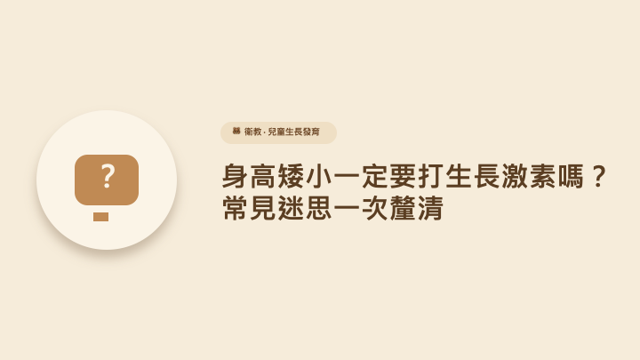

← 回文章列表
衛教
身高矮小，一定要打生長激素嗎？常見迷思一次釐清
「醫生，我們家孩子在班上都坐第一排，是不是要趕快來打生長激素？」
在門診，這幾乎是家長最常問的問題之一。許多人把生長激素當成「長高神藥」，以為只要不夠高，打下去就對了。其實，這是一個很大的誤區！
迷思一：身高矮，就一定要打生長激素？
答案是：不一定，而且大部分其實不需要。 生長激素是一種荷爾蒙治療，醫學上有非常嚴格的適應症。只有當孩子體內真的缺乏生長激素、或是患有特定基因疾病（如透納氏症、小胖威利症）、或是属于足月產但出生體重不足（SGA）且後續追趕生長不良的孩子，使用生長激素才會有顯著且安全的療效。
如果孩子只是偏食、睡眠不足、或是純粹遺傳體質偏矮（但生長速度正常），打生長激素不僅效果有限，還必須承受不必要的針劑負擔。
迷思二：只要骨齡還沒閉合，打了就一定有效？
骨齡沒閉合確實是治療的前提，但並不代表「只要打了就會像大樹一樣高」。影響身高的因素非常多，如果基本的飲食、睡眠和運動沒有調整好，單靠外來荷爾蒙，效果往往會大打折扣。
玉齡醫師真心話 身高矮小的第一步，絕對不是「考慮打針」，而是釐清原因。我們會透過詳細的病史詢問、生長曲線評估，必要時進行抽血或 X 光檢查（骨齡），甚至近一步安排進階檢查（例如基因、核磁共振），找出孩子長不高的根本原因，對症下藥才是最安全、也最省錢的做法。